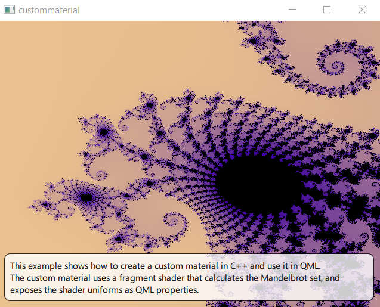

Scene Graph - Custom Material
Shows how to implement a custom material in the Qt Quick Scene Graph.
The custom material example shows how to implement an item that is rendered using a material with a custom vertex and fragment shader.

Shader and material
The main functionality is in the fragment shader
#version 440
layout(location = 0) in vec2 vTexCoord;
layout(location = 0) out vec4 fragColor;
// uniform block: 84 bytes
layout(std140, binding = 0) uniform buf {
mat4 qt_Matrix; // offset 0
float qt_Opacity; // offset 64
float zoom; // offset 68
vec2 center; // offset 72
int limit; // offset 80
} ubuf;
void main()
{
vec4 color1 = vec4(1.0, 0.85, 0.55, 1);
vec4 color2 = vec4(0.226, 0.0, 0.615, 1);
float aspect_ratio = -ubuf.qt_Matrix[0][0]/ubuf.qt_Matrix[1][1];
vec2 z, c;
c.x = (vTexCoord.x - 0.5) / ubuf.zoom + ubuf.center.x;
c.y = aspect_ratio * (vTexCoord.y - 0.5) / ubuf.zoom + ubuf.center.y;
int i;
z = c;
for (i = 0; i < ubuf.limit; i++) {
float x = (z.x * z.x - z.y * z.y) + c.x;
float y = (z.y * z.x + z.x * z.y) + c.y;
if ((x * x + y * y) > 4.0) break;
z.x = x;
z.y = y;
}
if (i == ubuf.limit) {
fragColor = vec4(0.0, 0.0, 0.0, 1.0);
} else {
float f = (i * 1.0) / ubuf.limit;
fragColor = mix(color1, color2, sqrt(f));
}
}
The fragment and vertex shaders are combined into a QSGMaterialShader subclass.
class CustomShader : public QSGMaterialShader { public: CustomShader() { setShaderFileName(VertexStage, QLatin1String(":/scenegraph/custommaterial/shaders/mandelbrot.vert.qsb")); setShaderFileName(FragmentStage, QLatin1String(":/scenegraph/custommaterial/shaders/mandelbrot.frag.qsb")); } bool updateUniformData(RenderState &state, QSGMaterial *newMaterial, QSGMaterial *oldMaterial) override; };
A QSGMaterial subclass encapsulates the shader together with the render state. In this example, we add state information corresponding to the shader uniforms. The material is responsible for creating the shader by reimplementing QSGMaterial::createShader().
class CustomMaterial : public QSGMaterial { public: CustomMaterial(); QSGMaterialType *type() const override; int compare(const QSGMaterial *other) const override; QSGMaterialShader *createShader(QSGRendererInterface::RenderMode) const override { return new CustomShader; } struct { float center[2]; float zoom; int limit; bool dirty; } uniforms; };
To update the uniform data, we reimplement QSGMaterialShader::updateUniformData().
bool CustomShader::updateUniformData(RenderState &state, QSGMaterial *newMaterial, QSGMaterial *oldMaterial) { bool changed = false; QByteArray *buf = state.uniformData(); Q_ASSERT(buf->size() >= 84); if (state.isMatrixDirty()) { const QMatrix4x4 m = state.combinedMatrix(); memcpy(buf->data(), m.constData(), 64); changed = true; } if (state.isOpacityDirty()) { const float opacity = state.opacity(); memcpy(buf->data() + 64, &opacity, 4); changed = true; } auto *customMaterial = static_cast<CustomMaterial *>(newMaterial); if (oldMaterial != newMaterial || customMaterial->uniforms.dirty) { memcpy(buf->data() + 68, &customMaterial->uniforms.zoom, 4); memcpy(buf->data() + 72, &customMaterial->uniforms.center, 8); memcpy(buf->data() + 80, &customMaterial->uniforms.limit, 4); customMaterial->uniforms.dirty = false; changed = true; } return changed; }
Item and node
We create a custom item to show off our new material:
#include <QQuickItem> class CustomItem : public QQuickItem { Q_OBJECT Q_PROPERTY(qreal zoom READ zoom WRITE setZoom NOTIFY zoomChanged) Q_PROPERTY(int iterationLimit READ iterationLimit WRITE setIterationLimit NOTIFY iterationLimitChanged) Q_PROPERTY(QPointF center READ center WRITE setCenter NOTIFY centerChanged) QML_ELEMENT public: explicit CustomItem(QQuickItem *parent = 0); qreal zoom() const { return m_zoom; } int iterationLimit() const { return m_limit; } QPointF center() const { return m_center; } public slots: void setZoom(qreal zoom); void setIterationLimit(int iterationLimit); void setCenter(QPointF center); signals: void zoomChanged(qreal zoom); void iterationLimitChanged(int iterationLimit); void centerChanged(QPointF center); protected: QSGNode *updatePaintNode(QSGNode *, UpdatePaintNodeData *) override; void geometryChange(const QRectF &newGeometry, const QRectF &oldGeometry) override; private: bool m_geometryChanged = true; qreal m_zoom; bool m_zoomChanged = true; int m_limit; bool m_limitChanged = true; QPointF m_center; bool m_centerChanged = true; };
The CustomItem declaration adds three properties corresponding to the uniforms that we want to expose to QML.
Q_PROPERTY(qreal zoom READ zoom WRITE setZoom NOTIFY zoomChanged)
Q_PROPERTY(int iterationLimit READ iterationLimit WRITE setIterationLimit NOTIFY iterationLimitChanged)
Q_PROPERTY(QPointF center READ center WRITE setCenter NOTIFY centerChanged)
As with every custom Qt Quick item, the implementation is split in two: in addition to CustomItem, which lives in the GUI thread, we create a QSGNode subclass that lives in the render thread.
class CustomNode : public QSGGeometryNode { public: CustomNode() { auto *m = new CustomMaterial; setMaterial(m); setFlag(OwnsMaterial, true); QSGGeometry *g = new QSGGeometry(QSGGeometry::defaultAttributes_TexturedPoint2D(), 4); QSGGeometry::updateTexturedRectGeometry(g, QRect(), QRect()); setGeometry(g); setFlag(OwnsGeometry, true); } void setRect(const QRectF &bounds) { QSGGeometry::updateTexturedRectGeometry(geometry(), bounds, QRectF(0, 0, 1, 1)); markDirty(QSGNode::DirtyGeometry); } void setZoom(qreal zoom) { auto *m = static_cast<CustomMaterial *>(material()); m->uniforms.zoom = zoom; m->uniforms.dirty = true; markDirty(DirtyMaterial); } void setLimit(int limit) { auto *m = static_cast<CustomMaterial *>(material()); m->uniforms.limit = limit; m->uniforms.dirty = true; markDirty(DirtyMaterial); } void setCenter(const QPointF ¢er) { auto *m = static_cast<CustomMaterial *>(material()); m->uniforms.center[0] = center.x(); m->uniforms.center[1] = center.y(); m->uniforms.dirty = true; markDirty(DirtyMaterial); } };
The node owns an instance of the material, and has logic to update the material's state. The item maintains the corresponding QML properties. It needs to duplicate the information from the material since the item and material live on different threads.
void CustomItem::setZoom(qreal zoom) { if (qFuzzyCompare(m_zoom, zoom)) return; m_zoom = zoom; m_zoomChanged = true; emit zoomChanged(m_zoom); update(); } void CustomItem::setIterationLimit(int limit) { if (m_limit == limit) return; m_limit = limit; m_limitChanged = true; emit iterationLimitChanged(m_limit); update(); } void CustomItem::setCenter(QPointF center) { if (m_center == center) return; m_center = center; m_centerChanged = true; emit centerChanged(m_center); update(); }
The information is copied from the item to the scene graph in a reimplementation of QQuickItem::updatePaintNode(). The two threads are at a synchronization point when the function is called, so it is safe to access both classes.
QSGNode *CustomItem::updatePaintNode(QSGNode *old, UpdatePaintNodeData *) { auto *node = static_cast<CustomNode *>(old); if (!node) node = new CustomNode; if (m_geometryChanged) node->setRect(boundingRect()); m_geometryChanged = false; if (m_zoomChanged) node->setZoom(m_zoom); m_zoomChanged = false; if (m_limitChanged) node->setLimit(m_limit); m_limitChanged = false; if (m_centerChanged) node->setCenter(m_center); m_centerChanged = false; return node; }
The rest of the example
The application is a straightforward QML application, with a QGuiApplication and a QQuickView that we pass a .qml file.
In the QML file, we create the customitem which we anchor to fill the root.
CustomItem {
property real t: 1
anchors.fill: parent
center: Qt.point(-0.748, 0.1);
iterationLimit: 3 * (zoom + 30)
zoom: t * t / 10
NumberAnimation on t {
from: 1
to: 60
duration: 30*1000;
running: true
loops: Animation.Infinite
}
}
To make the example a bit more interesting we add an animation to change the zoom level and iteration limit. The center stays constant.